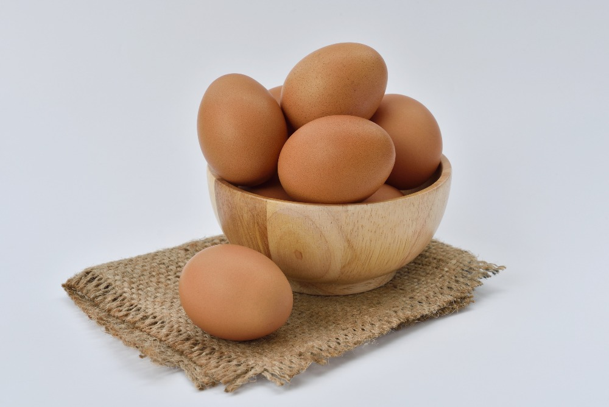
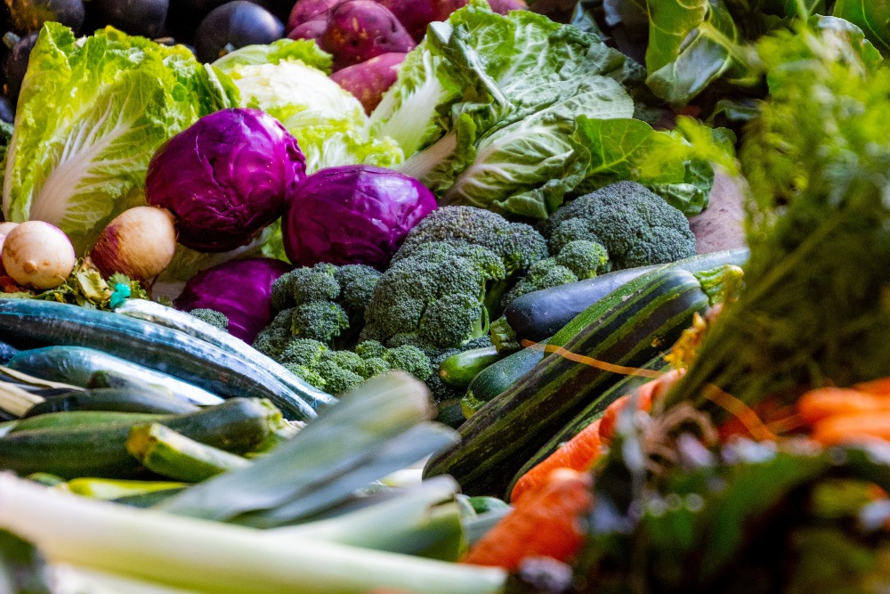
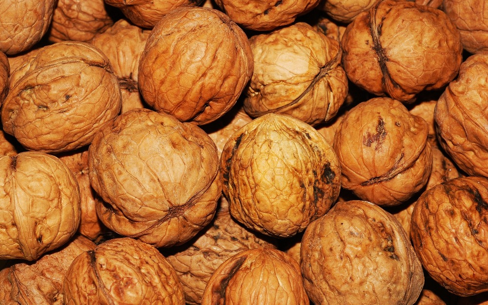
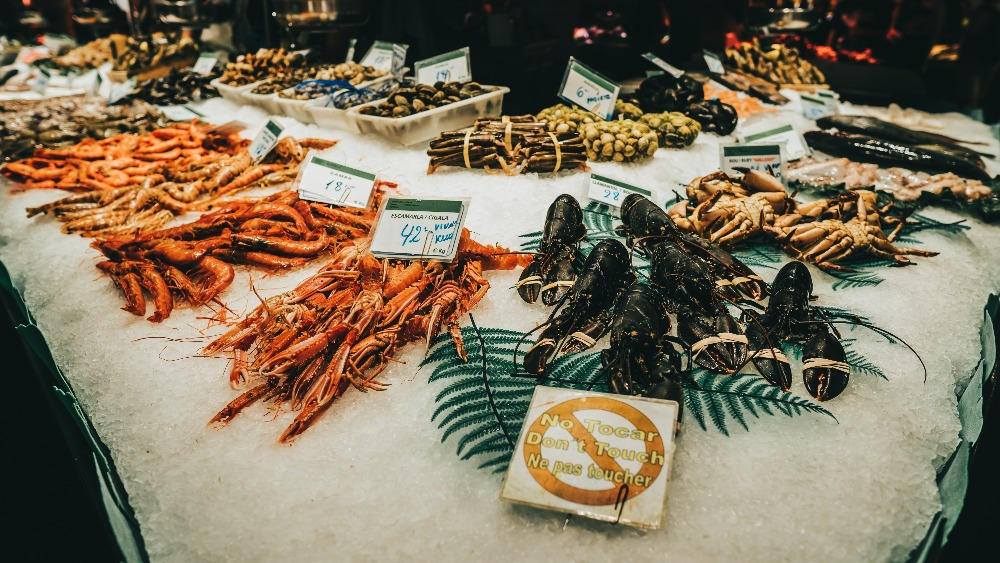
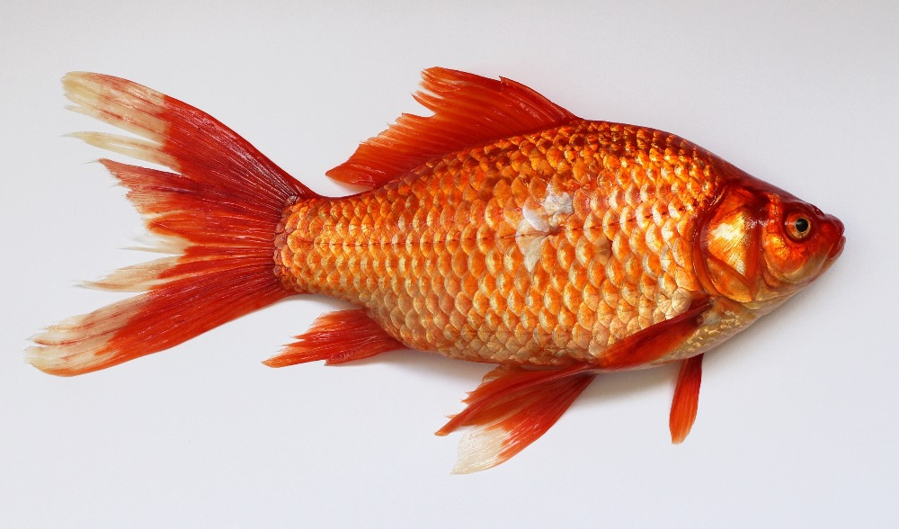
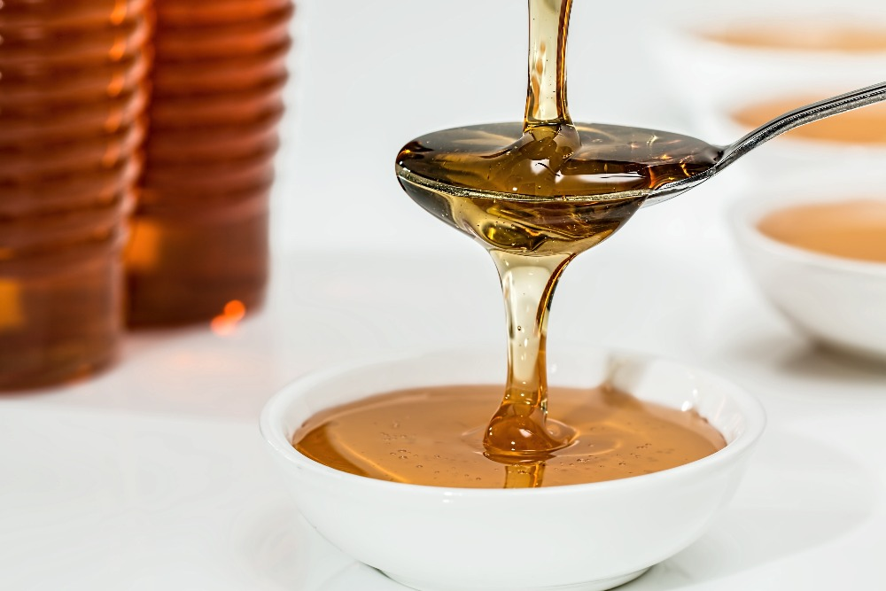

Why do we need to grow taller
There are alot of people who like to be tall , and there are some psychologists such as Gert Stulp, Abraham Buunk, and Thomas Pollet who founded that alot of women like tall men
Here are 10 foods that will help you to grow taller in only one month.
10- EGGS
Chicken eggs helps you maintain a level of energy. they are rich in vitamin B, which affect the production of energy in the cells in your body. Eggs contain a high amount of protein, which is good for muscle growth.
And our body uses protein for all phyisical process. therefore, to grow taller your body needs more protein Moreover, eggs contain the essential amino acids and minerals that are necessary for healthy bones and fast growth such as Calcium, Zinc, and iron.
NOTE:Eat 1 to 2 eggs for brekfast on an ordinary day or 1 to 2 for dinner on your training days. and to avoid the risk of salmonella, you should boil or bake eggs before eating rather than consuming them raw.
9- BEEF
Beef contains much more protein than other type of meat. Beef is rich in vitamin E, B12, and Zinc, which is useful for activating the production of the growth hormone, somatropin. Also , it contains protein that, as we know, is the best building material for growth. Beef is rich in a significant amount of iron.
It fills the cells in your body with oxygen, participates in all metabolic processes, and improves overall health.
.jpg)
8- VEGETABLES
Red and orange vegetbles such as carrots, red bell pepper, pumpkin, an tomatoes. Dark green and green leaf vegetables are known to have alot of vitamins and minerals. Many of these vegetables contain calcium and vitamin D. Also, cabbage, spinach, and broccoli are good sources of vitamin K.
7- WALNUTS
Walnuts Recent studies have shown that the components, contained these nuts can strengthen bone tissue. Also, vitamin E, Calcium, andPhosphorus affect your growth. You can eat nuts as snacks, add them to salads and desserts, or even make nut milk.
NOTE:Don't forget to add some nuts to yogurts ar cereals for breakfast.
6- SEAFOOD
All sea food, especially shellfish, is an excellent food for increasing height. It contains a lot of energy vitamins, such as B12. also seafood is also a source of high-quality protein. We suggest eating seafood for diinner as it contains few carrbohydrates.
It activate the growth hormne while you're sleeping.
5- OILY FISH
Oily fish contains vitamin A that is the most important growth stimulant. It's responsible for the production of collagen fibers that form bone tissue. Oily Fish also contains vitamin D, which help to produce bone-forming cells.
Also, this vitamin helps your body absorb Calcium faster.
4- HONEY
Honey consist of simple sugers, which your body can absorb quickly. Honey gives you a lot of energy and does not affect your insulin level. Also, it deliveries minerals to your body, whih are necessary for growth. Adding honey to your diet helps Calcium and Magnesium be absorbed better that makes your bones healthy. You can eat honey instead of sugar, adding it to tea, coffee, or yogurt.
3- MILK
In case you have some diseases -for example, diabetes -it's better to avoid milk However, if you have no problems with health, you can drink 2 to 3 glasses of milk aday to accelerate growth.
Milk is rich in calcium, vitamin A, and Protein.
.jpg)
2-BANANAS
Bannas are one of the best food to increase height. The vitamin and the efficient compounds within them always guard your body. the abundance of vitamins and minerals make banana a great source of energy. Simple carbs are quick to digest and can replenish your energy resource almost immediately if need be. Morover, banana is one of the best food source of Potassium.
You can add bananas to oats or cereals for breakfast. Also, such fruits as apples, plums, and pears are very useful for growth.
.jpg)
1- OATS
Oatmeal is the best product for incresing height. It consist of all th main component and mineral that help you grow and give you alot of energy. Aplate of Oats for breakfast brings all useful elements to your body: Potassium, Magnesium, Phosphorus, Iodine, Zinc, Iron, as well as vitamins A,B, E and K groups.
All of them make your bones and muscle tissue stron and healthy
.jpg) NOTE: You need to bring it back to normal and pay attention to the factors tha prevent growth.
NOTE: You need to bring it back to normal and pay attention to the factors tha prevent growth.
THIS IS THE THINGS TO AVOID WHEN YOU WHANT TO GROW HEIGHT
1- ALCOHOL AND SMOKING
Alcohol is the primary factor that prevents growth, as well as smoking. Alot of studies on this subject have proven it, and the best option is to avoid these two completely
2- SWEET CARBONATED DRINKS
They contain orthophosphoric acid that is the most powerful acidifier for your body. To neutralize the effect of this acid, your body expends calcium from you bones
3- SUGAR AND SWEETS
You should exclude food that contains synthetic protein from your diet. Fast food and chip also knock down your hormonal system that can inhibit growth.